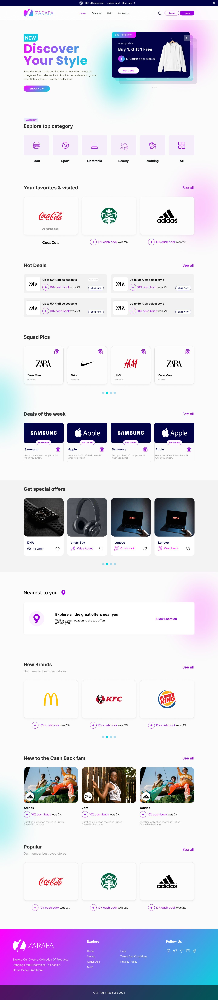
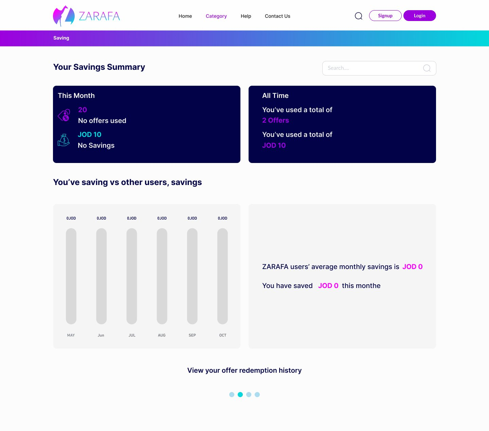
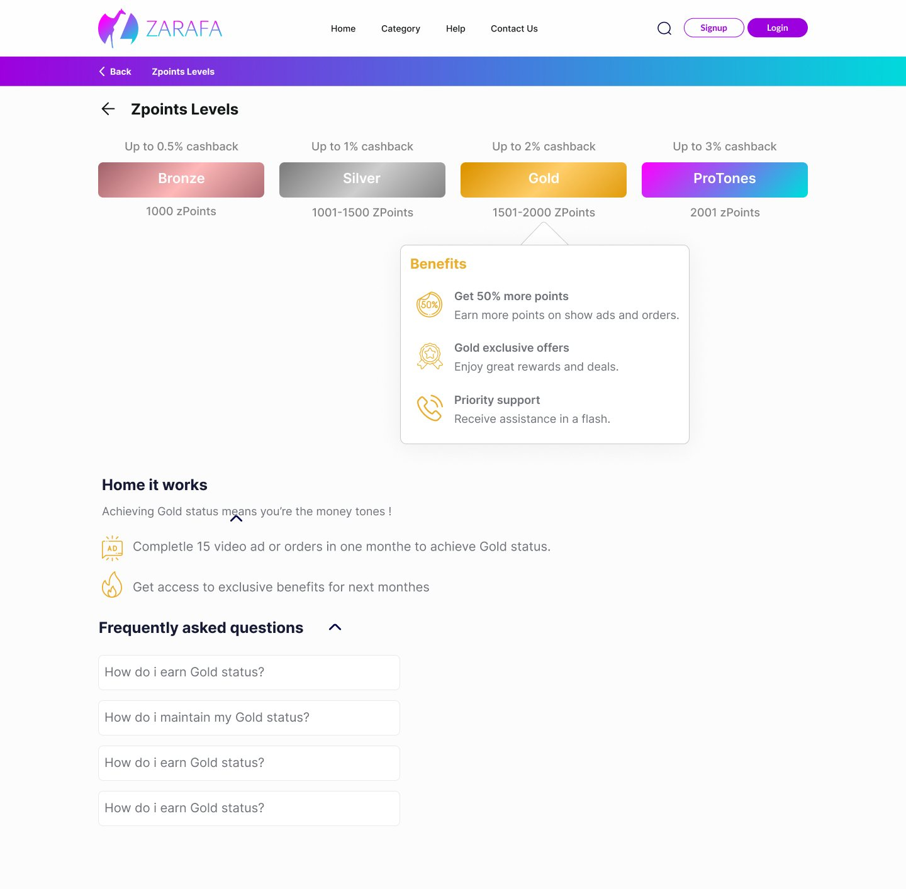
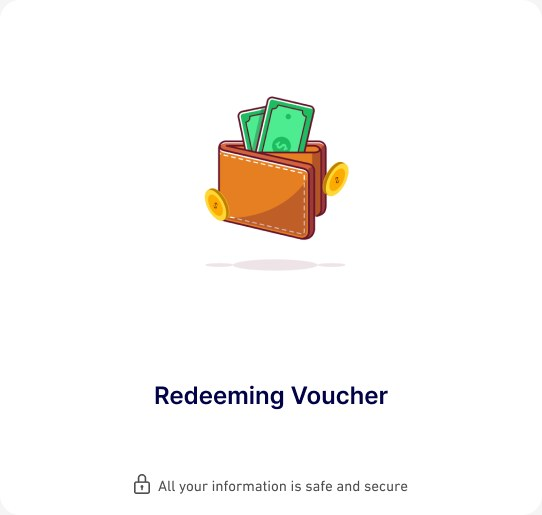
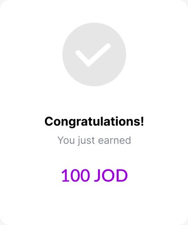
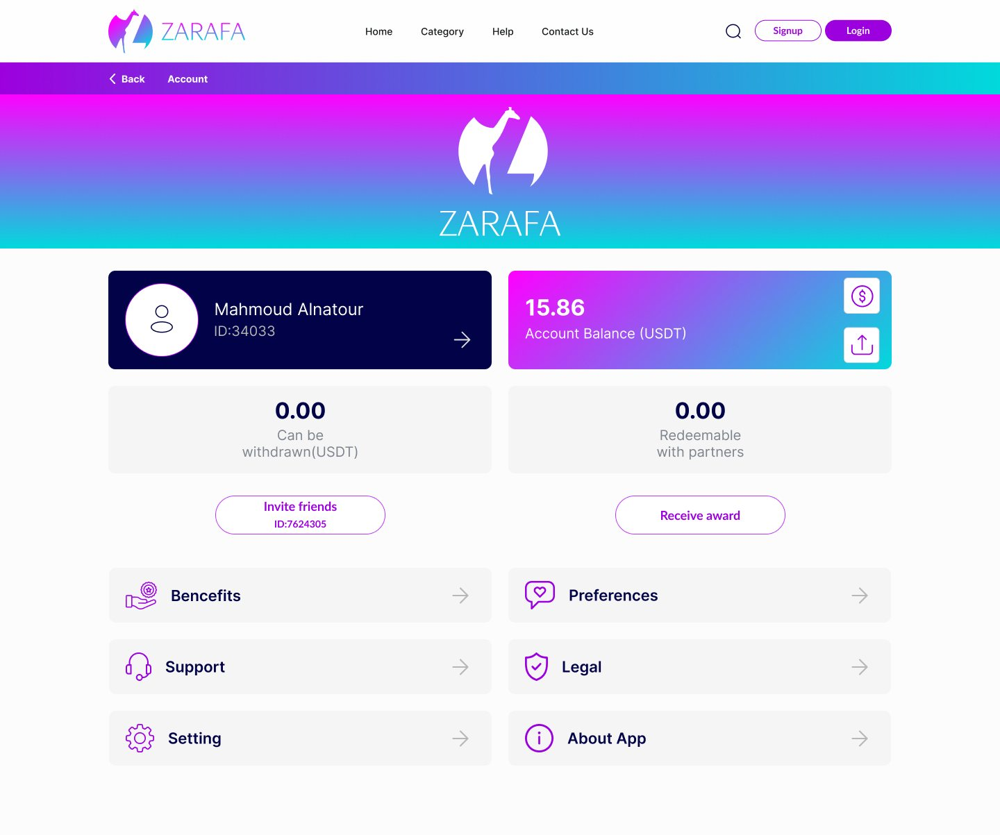

Visible value, without noise
The cashback rate is the reason to use Zarafa. It had to appear on every store, deal and brand card, and dozens of percentages quickly become unreadable.
A cashback marketplace, an earning layer and a digital wallet: three products people normally use separately, designed end to end as one coherent website.

A cashback marketplace, an earning layer (ads, tasks, referrals and loyalty tiers) and a digital wallet to send, request, split and redeem funds.
I designed the full desktop experience, from sign-up and verification to account settings: six end-to-end flows, 83 screens and 57 supporting dialogs and states, unified by one visual system.
The cashback rate is the reason to use Zarafa. It had to appear on every store, deal and brand card, and dozens of percentages quickly become unreadable.
Browsing categories, returning to known stores, hunting deals, discovering brands and finding nearby offers all start from the same page.
Funds arrive from cashback, ads, tasks, referrals and vouchers, and leave through transfers, requests, QR payments and redemptions. Users must trust every amount.
Points, tiers, tasks and subscriptions add depth, but each one is another rule to learn.
Compare cashback rates across a page without reading the cards.
Every way into the product reachable from the home, with no menus to dig through.
Every transaction shows its source, direction and status.
One visual language across six flows, so 83 screens feel like one product.
A tabbed or menu-driven home would hide most of the platform's value behind clicks. Instead, the home is one continuous scroll of purpose-built sections, and every section ends in “See all”, so the length works as a set of doorways rather than an endless feed.
The rate drives conversion, but repeating it on every card risked clutter. A single reusable chip, with a “+” icon, the current rate and the previous one, sits in the same position on every store, deal and brand card. Users compare by scanning, not reading, and showing the old rate makes a promotion obvious at a glance.


Rewardy states the value of every task before the user commits. Zpoints raises the cashback ceiling as users progress, and the savings summary turns individual results into a reason to keep going.



Each tier's benefits open directly beneath it: more points, exclusive offers, priority support.
What it takes to reach a tier is stated once, plainly, before any detail.
The FAQ sits at the end, collapsed, for the users who need more.
The wallet is action-first: the balance, then the three most frequent actions, the last person paid and recent activity. Every transaction shows its direction, source and status: paid, pending or declined.




Transfers, requests, cancellations, declines, QR scans, vouchers and rewards each get a dialog instead of a page change: a large part of the 57 states.
Only the wallet card and the primary action carry the gradient; the rest of the wallet stays white.
A payment request can be reminded, cancelled or declined from the same place it was created.



With clear colour roles, users learn the language once, so every new screen across the 83 is faster to understand.
A gradient pill marks the one primary action per screen; filled purple and outline handle secondary actions.
The primary button, the wallet card, the account balance, the reward summary and key headlines. It never sits behind body text, which protects readability. Reusable components (the cashback chip, store, task and tier cards, transaction rows and one dialog pattern) carry it across every flow.
It is the platform's core value and the main driver of store choice.
It exposes every entry point without extra navigation.
A single balance is simpler to understand than several.
Cashback rates can be compared by scanning, which supports the platform's main conversion goal.
Every financial movement is traceable by its source and status.
Tiers, tasks and savings feedback give users a reason to come back beyond a single purchase.
Region selection and an Arabic switch are part of the experience from the first screen.
Every number on this page is counted from the design file.